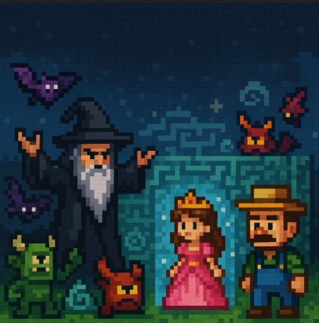

In a world where a farmer dreams big to unite all races in one city of his design:
Central City
In a distant realm where magic and mankind have long lived in uneasy balance, there lived a humble farmer, a dreamer who believed that peace could be grown like crops—patiently, and with care. While others feared the unknown, He envisioned a city where humans and magical creatures could walk side by side, their strengths woven together into a thriving harmony.
After years of toil and imagination, he finally earned an audience with the Princess, the only royal who shared his faith in unity. She saw in his plans not just architecture, but hope itself—hope that could heal a kingdom divided by fear and shadow. Together, they prepared to seal an alliance that would change their world forever.
But before dawn could rise on their new age, darkness struck. From the forgotten corners of the realm, the Sorcerer Gandalf the Great emerged—a master of forbidden magic who thrived on chaos and division. Seeing the farmer’s dream as a threat to his dominion, he seized the princess and vanished into an enchanted maze, a living labyrinth woven from spells, riddles, and the memories of those who failed before.
Now, the farmer’s vision lies in ruin, and the fate of both man and magic hangs in the balance. Armed with nothing but courage, wit, and the heart of an engineer, he must enter the maze where every wall whispers lies, every riddle guards a secret, and every wrong turn brings him closer to becoming its next prisoner.
To save the princess is to save his dream. But in a maze that shifts with every heartbeat… who is truly trapped?